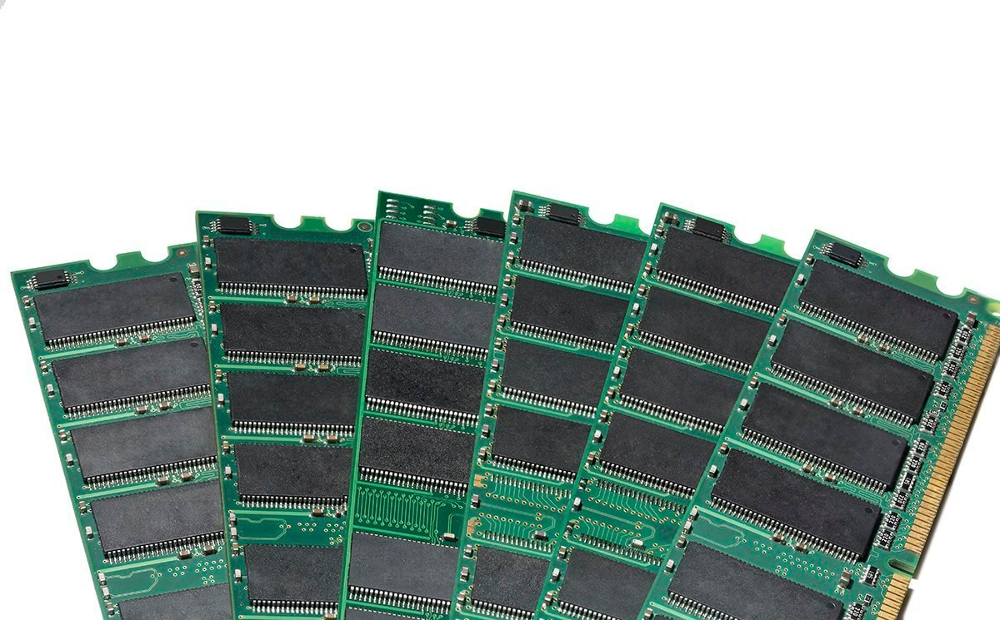
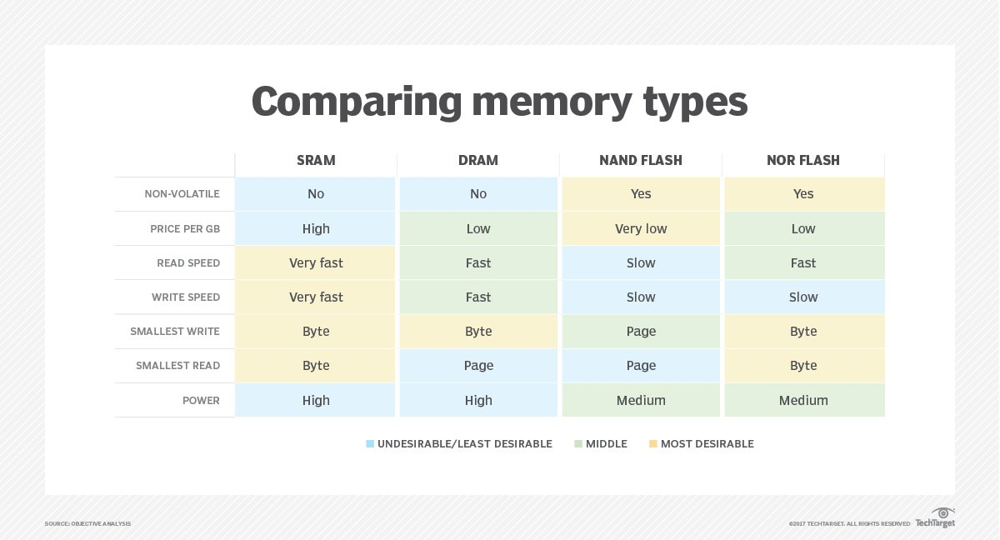

In this article, we will consider what a CPU is, what its functions are, and what it consists of. Each computing device (PC, smartphone, camera) has a center that is responsible for the correct operation of the machine - a processor. In a broad sense, a processor is a device that performs computational and logical operations with data. Most often, this term is used to refer to the central processor of a device. CPU stands for Central Processing Unit. This is the most important part of the computer.
What functions does the central processing unit (CPU) perform? The main function is to control all computer operations: from the simplest addition of numbers on a calculator to launching computer games. If we consider the main functions of the central processing unit in more detail, the CPU:
The central processing unit consists of 3 parts:
1. The processor core, which does the main work. It allows you to read, decrypt, execute and send instructions. The core consists of the following parts:
Arithmetic logic unit (ALU). Performs basic mathematical and logical operations. All calculations are performed in the binary system.
Control unit (CU). Controls the operation of the CPU using electrical signals. The coordination of all parts of the processor and its communication with external devices depends on it.
Each core can perform only one task, albeit in a fraction of a second. A single-core processor performs each task sequentially. For the modern volume of operations, this is not enough, so CPUs with more than one core are valued to perform several tasks simultaneously. For example, a dual-core performs two tasks simultaneously, a tri-core - three, etc.
2. Storage device. This is a small internal memory of the central processing unit. It consists of registers and cache memory. The registers store current commands, data, intermediate results of the operation. Frequently used commands and data from RAM are loaded into the cache memory. It is faster to access the cache than the RAM, so the size of the cache memory affects the speed of query execution.
3. Buses are channels through which information is transmitted. They are like rails for transporting data.
The main characteristic of a processor is its performance. It depends on two parameters: clock frequency and bit depth.
Clock frequency is the number of operations performed per second. It is measured in megahertz (MHz - a million cycles per second) and gigahertz (GHz - a billion cycles per second). The higher the clock frequency, the faster the machine works.
Bit depth is the amount of information (bytes) that can be transmitted per cycle. The bit depth of a processor can be 8, 16, 32, 64 bits. Modern processors are 32- and 64-bit.
There are two main manufacturers of central processors on the market - Intel and AMD.
Intel products are expensive, but have high performance. They consume less energy, therefore they overheat less. They have a good connection with RAM.
AMD products are significantly behind Intel, but they are cheaper. They require a lot of energy and interact worse with RAM compared to Intel processors.
Random access memory (RAM) is the hardware in a computing device that provides temporary storage for the operating system (OS), software programs and any other data in current use so they're quickly available to the device's processor. RAM is often referred to as a computer's main memory, as opposed to the processor cache or other memory types. Random access memory is considered part of a computer's primary memory. It is much faster to read from and write to than secondary storage, such as hard disk drives (HDDs), solid-state drives (SSDs) or optical drives. However, RAM is volatile; it retains data only as long as the computer is on. If power is lost, so is the data. When the computer is rebooted, the OS and other files must be reloaded into RAM, usually from an HDD or SSD.
The term random access, or direct access, as it applies to RAM is based on the facts that any storage location can be accessed directly via its memory address and that the access can be random. RAM is organized and controlled in a way that enables data to be stored and retrieved directly to and from specific locations. Other types of storage -- such as an HDD or CD-ROM -- can also be accessed directly and randomly, but the term random access isn't used to describe them. Originally, the term random access memory was used to distinguish regular core memory from offline memory. Offline memory typically referred to magnetic tape from which a specific piece of data could be accessed only by locating the address sequentially, starting at the beginning of the tape. RAM is similar in concept to a set of boxes organized into columns and rows, with each box holding either a 0 or a 1 (binary). Each box has a unique address that is determined by counting across the columns and down the rows. A set of RAM boxes is called an array, and each box is known as a cell. To find a specific cell, the RAM controller sends the column and row address down a thin electrical line etched into the chip. Each row and column in a RAM array has its own address line. Any data that's read from the array is returned on a separate data line. RAM is physically small and stored in microchips. The microchips are gathered into memory modules, which plug into slots in a computer's motherboard. A bus, or a set of electrical paths, is used to connect the motherboard slots to the processor. RAM is also small in terms of the amount of data it can hold. A typical laptop computer might come with 8 GB or 16 GB of RAM, while a hard disk might hold 10 TB of data. A hard drive stores data on a magnetized surface that looks like a vinyl record. Alternatively, an SSD stores data in memory chips that, unlike RAM, are non-volatile. They don't require constant power and won't lose data if the power is turned off.
Most PCs enable users to add RAM modules up to a certain limit. Having more RAM in a computer cuts down on the number of times the processor must read data from the hard disk or solid-state drive, an operation that takes longer than reading data from RAM. RAM access times are in nanoseconds, while storage access times are in milliseconds. Random access memory can hold only a limited amount of data, much less than secondary storage such as an SSD or HDD. If RAM fills up and additional data is needed, the system must free up space in RAM for the new data. This process might involve moving data temporarily to secondary storage, often by swapping or paging files. Such operations can significantly affect performance, which is why it's important that a system has enough RAM to support its workloads. The amount of RAM needed depends on how the system is being used. When video editing, for example, it's recommended that a system have at least 16 GB RAM, though more is desirable. For image editing in Photoshop, Adobe recommends a system have at least 8 GB of RAM to run Photoshop Creative Cloud on a Mac. However, if the user is working with multiple applications at the same time, even 8 GB of RAM might not be enough and performance will suffer.
Dynamic random access memory (DRAM). DRAM is typically used for a computer's main memory. As was previously noted, it needs continuous power to retain stored data. DRAM is cheaper than SRAM and offers a higher density, but it produces more heat, consumes more power and is not as fast as SRAM. Each DRAM cell stores a positive or negative charge held in an electrical capacitor. This data must be constantly refreshed with an electronic charge every few milliseconds to compensate for leaks from the capacitor. A transistor serves as a gate, determining whether a capacitor's value can be read or written. Static random access memory (SRAM). This type of RAM is typically used for the system's high speed cache, such as L1 or L2. Like DRAM, SRAM also needs constant power to hold on to data, but it doesn't need to be continually refreshed the way DRAM does. SRAM is more expensive than DRAM and has a lower density, but it produces less heat, consumes less power and offers better performance. In SRAM, instead of a capacitor holding the charge, the transistor acts as a switch, with one position serving as 1 and the other position as 0. Static RAM requires several transistors to retain one bit of data compared to dynamic RAM, which needs only one transistor per bit. This is why SRAM chips are much larger and more expensive than an equivalent amount of DRAM. Because of the differences between SRAM and DRAM, SRAM is mainly used in small amounts, most notably as cache memory inside a computer's processor.
A graphics processing unit (GPU) is a computer chip that renders graphics and images by performing rapid mathematical calculations. GPUs are used for both professional and personal computing. Originally, GPUs were responsible for the rendering of 2D and 3D images, animations and video, but now they have a wider use range. Like a central processing unit (CPU), a GPU is also a chip component in computing devices. One important difference, though, is that the GPU is specifically designed to handle and accelerate graphics workloads and display graphics content on a device such as a PC or smartphone. An electronic device with an embedded or discrete GPU can smoothly render 3D graphics and video content, making it suitable for gaming and other visual applications. Over time, technological improvements have resulted in more flexible and programmable GPUs that can be used for many more applications and workloads other than gaming. GPUs are now used for creative content production, video editing, high performance computing (HPC) and artificial intelligence (AI).
In the early days of computing, the CPU performed the calculations required for graphics applications, such as the rendering of 2D and 3D images, animations and video. As more graphics-intensive applications were developed, however, their demands put a strain on the CPU and decreased the computer's overall performance.
GPUs were developed as a way to offload those tasks from CPUs for graphics applications. A GPU performs graphics-related calculations very quickly and in parallel to allow for fast and smooth rendering of content on the computer screen. Since the GPU takes care of the calculations, the CPU is free to handle everything else that's not related to the graphics application.
GPUs work by using a method called parallel processing, where multiple processors handle separate parts of a single task. A GPU will also have its own RAM to store the data it is processing. This RAM is designed specifically to hold the large amounts of information coming into the GPU for highly intensive graphics use cases.
For graphics applications, the CPU sends instructions to the GPU for drawing the graphics content on screen. The GPU executes the instructions in parallel and at high speeds to display the content on the device -- a process known as the graphics or rendering pipeline.

GPUs are widely used for PC gaming, allowing for smooth, high-quality graphics rendering. Modern GPUs are also adapted to a wider variety of tasks than they were originally designed for, partially because they are more programmable than they were in the past. That's why GPUs are now also used to accelerate AI workloads and for machine learning (ML).
Generally, there are two types of GPUs:
Integrated GPUs. An integrated GPU is built into the computer's motherboard. It could also be integrated with the CPU. Systems with integrated GPUs are generally small and light, since less space is required to incorporate the GPU.
GPU integration reduces the system's power consumption. In many cases, it also reduces the device's cost. That said, a laptop PC with an integrated GPU often is not upgradable, so if graphics needs change, it might require investing in an entirely new device.
Today, gaming laptops are available that align with modern games' system requirements, including GPU type and speed. These laptops smoothly render the graphics for different kinds of games and enhance gamers' playing experiences.
Discrete GPUs. A discrete -- or dedicated -- GPU can be mounted on a separate circuit board. It usually exists in the form of a removable graphics card with powerful capabilities for resource-intensive, high-performance applications such as 3D games.
A discrete GPU adds more processing power to the computer and can be upgraded as the user's needs change. However, it consumes more energy than an integrated GPU. It also generates considerable heat and will likely require dedicated cooling to reduce the heat and maximize GPU -- and laptop -- performance.